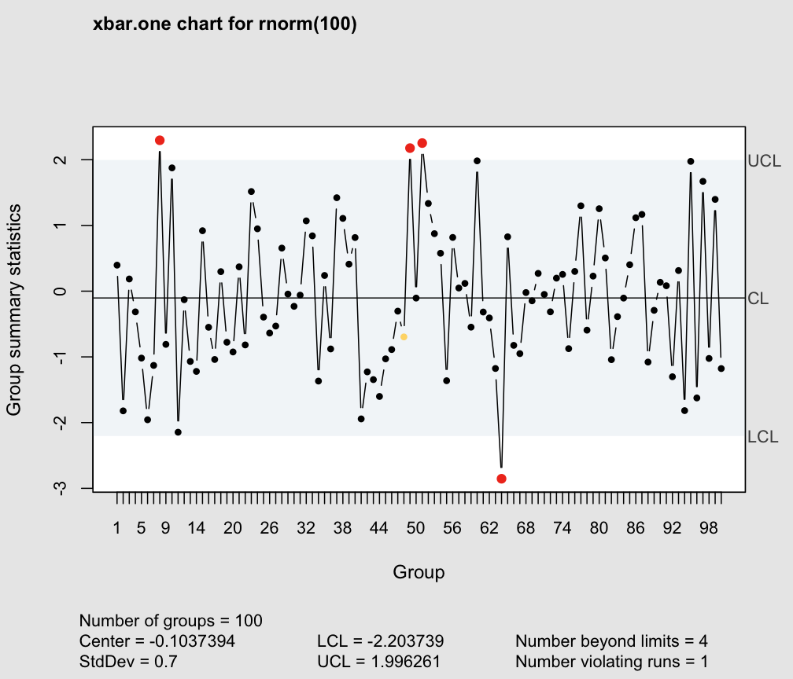

This function can be used to control the behavior of the 'qcc' library such as the background color, out-of-control points appearance, and many others.
qcc.options(…)
| … | the option to be set or retrieved. See details. |
|---|
The available options are:
exp.R.unscaleda vector specifying, for each sample size, the expected value of the relative range (i.e. \(R/\sigma\)) for a normal distribution. This appears as \(d_2\) on most tables containing factors for the construction of control charts.
se.R.unscaleda vector specifying, for each sample size, the standard error of the relative range (i.e. \(R/\sigma\)) for a normal distribution. This appears as \(d_3\) on most tables containing factors for the construction of control charts.
beyond.limits$pchplotting character used to highlight points beyond control limits.
beyond.limits$colcolor used to highlight points beyond control limits.
violating.runs$pchplotting character used to highlight points violating runs.
violating.runs$colcolor used to highlight points violating runs.
run.lengththe maximum value of a run before to signal a point as out of control.
bg.marginbackground color used to draw the margin of the charts.
bg.figurebackground color used to draw the figure of the charts.
cexcharacter expansion used to draw plot annotations (labels, title, tickmarks, etc.).
font.statsfont used to draw text at the bottom of control charts.
cex.statscharacter expansion used to draw text at the bottom of control charts.
If the functions is called with no argument return a list of available options.
If an option argument is provided the corresponding value is returned.
If a value is associated with an option argument, such option is set and the list of updated option values is invisibly returned.
In this case the list .qcc.options is modified and any modification will remain in effect for the rest of the session.
old <- qcc.options() # save defaults qcc.options("cex.stats") # get a single parameter#> [1] 0.9qcc.options("cex.stats"=1.2) # change parameters qcc.options(bg.margin="azure2") qcc.options("violating.runs" = list(pch = 15, col = "purple")) qcc.options("beyond.limits" = list(pch = 15, col = "orangered")) qcc(rnorm(100), type = "xbar.one", std.dev = 0.7) # see the results#> xbar.one chart for rnorm(100) #> #> Summary of group statistics: #> Min. 1st Qu. Median Mean 3rd Qu. Max. #> -2.8540251 -0.9314863 -0.1178361 -0.1037394 0.5961094 2.2954251 #> #> Group sample size = 1 #> Number of groups = 100 #> Center of group statistics = -0.1037394 #> Standard deviation = 0.7 #> #> Control limits: #> LCL UCL #> -2.203739 1.996261qcc.options(old) # restore old defaults